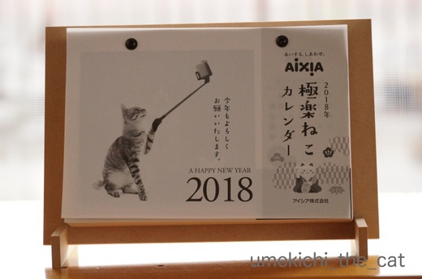
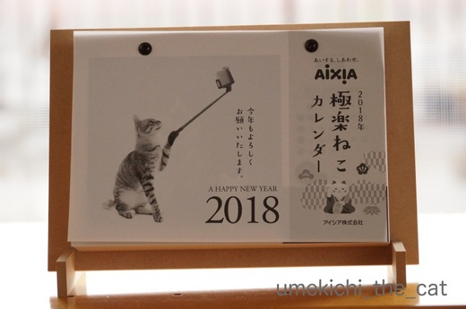

寒くなっても水回りが好き [梅吉]
グッと気温も下がってきましたね。
最近の梅吉さんは

こんなふうに毛布に潜り込んでいるか（若干白目気味です）

温い冷蔵庫の上でポーズなんてキメちゃっていることが多いのですが
大好きな水回りのチェックも欠かしていません。
先日は・・・・・
残り湯の中にダイブΣ(ﾟ◇ﾟ；)
濡れて足だけミョーに細くなっているのがお分かりになりますか？

![[猫]](https://blog.ss-blog.jp/_images_e/101.gif) わしになにがおきたんやろか・・・
わしになにがおきたんやろか・・・

はよわすれとこ・・・
ポチャッでもバシャッでもなく「ドッボーーーーーン」と音がしたので駆けつけると
やっちまった・・・・という顔をして4本の足をお湯の中につけて立ってました(≧ω≦｡)
急いでカメラを構えた時にはすでにお湯から上がってしまった後でしたけどw

ふふっ わしとしたことが（照れ）
元気一杯も良いですが無茶して怪我したり風邪ひかないでくださいよー。
アイシア 極楽ねこカレンダーが届きました。

白黒なんです。ちょっと残念！！

梅吉は1月17日でした。
こいつぁ春から縁起が良いわい![[グッド（上向き矢印）]](https://blog.ss-blog.jp/_images_e/145.gif)
 ↑ガブッと一押し↑
↑ガブッと一押し↑
最近の梅吉さんは

こんなふうに毛布に潜り込んでいるか（若干白目気味です）

温い冷蔵庫の上でポーズなんてキメちゃっていることが多いのですが
大好きな水回りのチェックも欠かしていません。
先日は・・・・・
残り湯の中にダイブΣ(ﾟ◇ﾟ；)
濡れて足だけミョーに細くなっているのがお分かりになりますか？


ポチャッでもバシャッでもなく「ドッボーーーーーン」と音がしたので駆けつけると
やっちまった・・・・という顔をして4本の足をお湯の中につけて立ってました(≧ω≦｡)
急いでカメラを構えた時にはすでにお湯から上がってしまった後でしたけどw

元気一杯も良いですが無茶して怪我したり風邪ひかないでくださいよー。
アイシア 極楽ねこカレンダーが届きました。

白黒なんです。ちょっと残念！！

梅吉は1月17日でした。
こいつぁ春から縁起が良いわい
2017-12-08 15:31
nice!(67)
コメント(34)

カフェオレ色の梅吉

梅吉 2023年8月10日 永眠


梅吉と出会った譲渡会

犬猫の理由なき殺処分ゼロ
妄想広告
UMEKICHI 光

爆発的に早い！
時々攻撃的！
Thanks to Mr.Boss365
爆発的に早い！
時々攻撃的！
Thanks to Mr.Boss365

梅吉くんお風呂にダイブとはチャレンジャーですね。お湯が残ってると思わなかったのかな？でもそんなに驚いてないような…。
by palpal (2017-12-08 16:02)
毛布に潜る梅吉くん、コッソリ潜って後ろから羽交い締めしたくなりますね。
残り湯にダイブ、ガチお風呂じゃなくてよかったですね。
脚ビショビショ、水も滴る色梅吉くん。その後床をビショビショにして怒られる…？それともちゃんとバスマットで脚を拭いて出る…？
by BillK-ko (2017-12-08 16:08)
一枚目の若干白目、にやにやしながら見ちゃいました(笑)
やっぱり白目はいいなー(笑)
お風呂にダイブなんて、チャレンジャー！
足が細くなってるのわかりますよ ^m^
そんな状況でもカメラを構える飼い主さんはさすがですｗｗ
きっと私も撮る(笑)
そうなのよね。アイシアさんは白黒なのよねえ。
でもやっぱり採用されて完成品を見ると嬉しくなりますね！おめでとう^^
by リュカ (2017-12-08 16:09)
毛布で一緒にヌクヌクしたい(*^_^*)
お風呂場でビックリ（笑
少し放心状態ですかね！
カレンダー嬉しいですねぇ～！
ずっとその日付のまま一年が過ぎそうです♪
by きぃ (2017-12-08 16:34)
あ～ドボンやっちゃいましたか！！(^▽^;)
梅吉さん、次はおかーさんがカメラ構えている前でよろしくね♪
動じないところがさすが、ウチのだったらきっとパニックになってそのままリビング暴走ですよ・・・。
カレンダー日めくりだけどめくらず固定、ちぃさん家は一年中1月17日ということで(*^▽^*)
確かに白黒だと梅吉さんのやわらかいカフェオレ色が出ませんね。
ウチのはカラーでも白黒でもあんまり変わりません( ;∀;)
by ゆきち (2017-12-08 18:40)
最初の写真の梅吉さん
ぬくぬくで温まっていますね！
by ma2ma2 (2017-12-08 20:32)
うちでもお風呂に落ちたら飛び出して暴走。家中びしょびしょ。梅吉さん蓋があると思って飛んだのかな。でも落ち着いてますね~。
綺麗な毛色は出ないけどこの表情の可愛さはやっぱり梅吉さんです。カレンダーいいなっ!
by zombiekong (2017-12-08 21:01)
猫さんは水が苦手だと、ずーと思っていました。
梅吉さんは関係ないんですね。
照れて薄目の梅吉さんの表情がいいです(^^)
by riverwalk (2017-12-08 22:13)
「ドッボーーーーーン」とはどういう状態だったのか気になりますね〜
足だけでよかったです。
決定的瞬間を見逃さないように、家中にカメラの設置をお願いしま〜す（笑）
または、ちぃさんの腕にカメラを埋め込むとか（笑）
日めくりカレンダー完成ですね。
梅吉さん色が欲しかったところですが、1月17日の主役を務めていますね。
良い写真です。
by kiki (2017-12-08 22:21)
梅吉君、ビックリしたね～(@_@)
でも、足をお湯につけたままじっと立ってるなんて
余裕ですね☆
なにわのオトコは太っ腹～(*^^)v
もしうちのあかりだったら、ドボンで駆け付けた時には
ぶっ飛んで遠～くのほうに逃げてるかな？＾＾；
でも、濡れて細くなってる足が可愛いです(≧▽≦)
カレンダー、白黒なの珍しいけど
ノスタルジックな梅吉君が、浮かび上がっていますね。
とても素敵です♪
by マーヤ (2017-12-09 00:26)
子猫さんも真冬に寒中水泳した事があります。
バスタブに避難場所があるのは良いですね＾＾
by ぽちの輔 (2017-12-09 06:53)
カレンダー採用、おめでとうございます。
１月１７日分、語呂合わせは「いいなｗ」で最高ですね～♪。
お風呂にドボン、うちのルーチェくんも数年前に。
ふだんからバスタブの中に入るのがお好みなのだけど、それは日中の空のときのはず。
まさかスッポンポンになったハリネズミがお風呂に入ろうとドアを開けた瞬間に
止める間もなくドボンとは！
正月２日のことでした。湯船にはお湯たっぷりで梅吉くんのように足だけでなく、
頭までビッショリ～。その後半年ほど、日中もバスルームには近づかなかった・・・・。
by ハリネズミ (2017-12-09 08:19)
梅吉さんってば、浴槽にダイブなんて大胆なw
濡れて細くなる足が羨ましい（≧∇≦）
シロクロの梅吉さんも素敵ですよぉ♪( ´▽｀)
来年のちぃさん家はずっと１月１７日ですねぇ*\(^o^)/*
by ニッキー (2017-12-09 11:32)
梅吉さんどうなさいましたかw
呆然とする立ち姿、堪らん可愛い！
猫さんて、落ちたり上がり損ねたりした後が何事もなかったように振る舞うのがすごく可笑しい（≧∇≦）
「何でお水あったんやろか…ビックリや」という心境でしょうかww
「お母は〜ん！！ボクお風呂にはまったわ〜」ってびしょ濡れで出てこなくて良かったよ(^^;
カレンダー、白黒なんですね。梅吉さんのカフェオレ色がいいのにぃ〜！
でも可愛さは十分伝わっておりますよ♪
「梅吉はん、エライ災難やったなー風邪引きなや〜」
「カレンダーは白黒か〜白黒ならウチに任せんかいな〜(=^ェ^=)」
by くつしたにゃん (2017-12-09 11:50)
残り湯にダイブですかっ(@@;)
すごいわ〜 どーゆー気持ちで、そのチャレンジに至ったのか･･･
ぜひともお立ち台に来ていただいて、インタビューしてみたい♪
梅吉さん「いいな」の1月17日ですにゃ♡
by のらん (2017-12-09 11:56)
ドッボーンとやっちゃいましたね(^^;)
なかなかお茶目な梅吉さんですね。
白黒の梅吉さんもイカしてますよ！
by kou (2017-12-09 12:08)
泳ぎたいのかな？
猫は温かい場所をよく知ってますよね。
by 響 (2017-12-09 16:19)
寒くなってきたから、暖かいところの写真、似合いますね＾＾
おや、ドポンと‥？！
足が細くなってるー＾m＾
にゃんこはなかったことにしますよね、こういう時＾＾；
カレンダーの写真、目つきの可愛さが生きてますね＾＾
白黒ちょっと残念な気持ちもわかりますけど。
by sana (2017-12-09 17:38)
寒いので梅吉さんもひとっ風呂浴びたかったのかな？
カレンダー掲載おめでとうございます。
来年はずっと1月17日ですね♪ ^^;
by yes_hama (2017-12-09 19:13)
１枚目毛布込みでかわいいです~。
カレンダーはさっそく１月に
登場なんですね＾＾
by ふにゃいの (2017-12-09 19:45)
浴槽の周辺がお好きだとは、これにはビックリです。てっきり苦手なものだと思っていました。(◎_◎;)。。
by 水郷楽人 (2017-12-10 08:12)
梅吉さま、とってもフォトジェニック！あの類まれな毛色、ぜひカラーにしてほしかったー！
by Ginger (2017-12-10 11:49)
梅吉さんえらい！
カメラマンさんが来るの待ってたんだね！
呆然としてたわけじゃないよね(^_-)
ゆづがこんなことになったら
数秒で2階の部屋の隅っことかに飛んでいきそうです。
by も〜 (2017-12-10 20:52)
１枚目の梅吉くんがチワワっぽい・・・(｡-_-｡)
ええっ、おフロにはまってもパニクらないのですね。すごい。
ネコカレンダー掲載すごいですね！
by Ja-Kou66 (2017-12-10 23:54)
久しぶりに覗きにきました(*´∀｀)![[ぴかぴか（新しい）]](https://blog.ss-blog.jp/_images_e/150.gif)
![[黒ハート]](https://blog.ss-blog.jp/_images_e/136.gif)
![[あっかんべー]](https://blog.ss-blog.jp/_images_e/205.gif)
![[わーい（嬉しい顔）]](https://blog.ss-blog.jp/_images_e/140.gif)
![[猫]](https://blog.ss-blog.jp/_images_e/101.gif)
![[ムード]](https://blog.ss-blog.jp/_images_e/155.gif)
あら！?吉さん、カレンダーデビューですか
さすが美男子
お風呂にダイブだなんて、元気なのはいいけれど ほんとに風邪ひかないでねー140;1034
白目も健在なようで 安心しました
またお邪魔します
益々賑やかなドコノコも 時々覗いてみてくださいな～
by あんこ玉 (2017-12-11 01:04)
失礼、梅吉さんの梅 が抜けてしまってました![[あせあせ（飛び散る汗）]](https://blog.ss-blog.jp/_images_e/162.gif)
by あんこ玉 (2017-12-11 01:07)
カレンダー掲載、かっこいいなぁー。
スターはモノクロ写真でもステキですよっ(≧∀≦)
by よーちゃん (2017-12-11 08:13)
なんと！ 梅吉さん、水は大丈夫なのですか！？
大抵は嫌がるけど、加えてダイブとは！！
（足先だけど……、）水も滴るイイ漢、です(^^♪
ちなみに我が家のオトコは、お風呂のお湯をペロペロします（苦笑）
おにゃごの方は、よく風呂フタの上で、
スチーマーよろしく蒸気にあたってます。美容か？？
カレンダーの梅吉さん、ダンディー♪
お目目、クリクリでラブリー(^.^)
by morichan (2017-12-11 12:04)
梅吉くん・・・足が細くなちゃったよ！！
濡れた足を1本ずつ「ていっ！ていっ！」って水を飛ばしてる様子が目に浮かぶ(^-^)
家の子たちは、私がお風呂に入っていると浴槽の淵に乗ったりしているから
いつ滑って落ちてもおかしくないです。
その時はきっと私に落とされたんだと思うんだろうな～ｗ
カレンダー。届いたのね♪
白黒でもうれしいことには変わりない！
ちぃさんのお家もやっぱり梅吉くんのまま、カレンダーとしての機能は果たせないのかな？(≧▽≦)
by emi (2017-12-12 14:43)
palpalさん＞
落ちた音から想像するとフタがあると思って飛び乗ったと思われます^^;
呆然としながらも運命を受け入れていた模様。諦念ってやつかしらー(≧ω≦｡)
BillK-koさん＞
ビショビショの足で走り出す前に速攻捕獲しました！
（梅吉は濡れた足で走るとすべって面白いと思っている。本当に！）
ウニャウニャ文句言いながら足とお尻と拭き拭きされましたよw
リュカさん＞
何故だか冬場はあまり白目にならないので貴重な一枚ですよー。
溺れていないのを確認したら「カメラー！カメラー！」と
おっとを呼びましたww大切な日常の記録ですからねっ！
アイシアさん、しかも自分で組み立ててね＾＾のタイプでした。
来年のカレンダーの役目をしない常設カレンダー決定です＾＾
きぃさん＞
「やっちまった〜」って顔していましたよー(≧ω≦｡)
よくお風呂のヘリを歩いているから落ちるなぁとは思っていましたが
ダイブする(多分）とはね、でしたw
カレンダーはめくらない日めくりカレンダーとして常設しますよ＾＾
ゆきちさん＞
私はまだまだブロガーとして自覚が足りないので
カメラをひっつかんでから駆けつける、が出来ませんでした！残念！！
ボー然と湯船に浸かっている様子撮影したかったー。
そうかー(･◇･)
梅吉がモノトーン猫だったら・・・と想像しながらカレンダーを眺めるとします＾＾
めくらない日めくりカレンダー・・・(≧ω≦｡)
ma2ma2さん＞
寒いだろうと毛布に上がっているとついつい上にもかけてあげたくなって・・・
そうすると梅吉も潜り込んでぬくぬくとなります＾＾
zombiekongさん＞
梅吉はびっくりして飛び出すことはしませんが
「ぬれたあしで はしると むっちゃおもろい」と思って走り出すので
その前にがっつり捕獲しましたw
カレンダー、いつもの梅吉じゃないみたいに可愛く撮れてるでしょー！
おもちゃを振り回しながら
腕をプルプル震わせてシャッター切った甲斐がありました＾＾
（デジイチ重い・・・）
by ちぃ (2017-12-12 15:30)
riverwalkさん＞
梅吉はむしろ水が好き。
お風呂はフタの上に寝そべって毎晩一緒に入っていますよ＾＾
濡れるのもあんまり気にならないみたいです。
でもシャンプーは嫌い^^;
kikiさん＞
おそらくフタがあると思って飛び乗ったのではないかと・・・^^;
様子を見に行って梅吉の無事を確認したらまず思ったのがカメラ！でした。
（梅吉に）何か起きたらスマホorカメラを掴む！
を身につけなければと思いましたよwww
来年我が家は1月17日で時が止まることでしょう＾＾
マーヤさん＞
もともと水は嫌がらないので（シャンプーされるのは嫌い）
「あしがぬくくて ええかんじや」なんて思ってたのかもしれません(≧ω≦｡)
白黒カレンダーはちょっと残念！と思ったのですが
見ているうちにこれはこれでいいかな、と＾＾
なんたって可愛い梅吉はカラーでも白黒でもイケますからＯ(≧▽≦)Ｏ
（親バカ炸裂ですみません。。。）
ぽちの輔さん＞
子猫さんもやりますねー！
濡れるのは構わないんですが風邪引くんじゃないかと
数時間暖房を「強」にして過ごしてちょっと暑かったです^^;
バスタブの半身浴用の段差が梅吉にジャストサイズ〜＾＾
ハリネズミさん＞
あら♪「いいな」！本当だ！！気づきませんでしたよ〜＾＾
梅吉も空のバスタブに入ってよく遊んでいます。
おもちゃがよく転がるのが良いみたいw
このダイブの日の夜も梅吉はちゃんと私と一緒にお風呂に入りましたよー。
（毎晩フタの上でまったりするのだ）
懲りない漢、梅吉ですwww
ニッキーさん＞
ひょっとしてニッキーさん家のにゃんずさんは
濡れてもあまり変わらないお姿・・・とか？(≧ω≦｡)
アメショ系はアンダーコートももっさり生えているから
水分をあまり吸収しないのかも・・・ですね＾＾
日めくりカレンダーはめくらないカレンダーとして使いますw
くつしたにゃんさん＞
「やっちまった・・・」という吹き出しをつけたいくらいの
残念顔していたんですよ(≧ω≦｡)
そのあと足を拭くと「なんであしをふくんじゃ〜！」
「あんたがお風呂に落ちたからじゃ〜〜！！」とのおかーさんとの攻防が^^;
それにしてもカメラを持って駆けつけなかったのが悔やまれますw
カレンダー「梅吉が白黒猫だったら」と楽しみながら
一年を過ごしますよー。日めくりカレンダーだけどめくらないwww
「姐さんは まいにち しっくに きめてるんやな」by梅吉
by ちぃ (2017-12-12 18:56)
のらんさん＞
あははＯ(≧▽≦)Ｏインタビューしてみたら大して理由もないのが
梅吉大先生かと思われます(〃▽〃)
来年の我が家はず〜っと「いいな」の日々で〜す＾＾
kouさん＞
失敗しても決してめげない、というかすぐに忘れる梅吉なので
この日の夜も何事もなかった様にお風呂に入ってきましたよー＾＾
（毎晩一緒にお風呂に入ってます！）
ちなみにお風呂でもよく白眼になってます(^_－)☆
響さん＞
そんなに水が好きなら・・・って子供用のビニールプールを買って
水を張ったら入らないんですよー( ･̆ˍ･̆ )
猫様の気持ちは読みきれません！
sanaさん＞
暖かいところが好きだからってお風呂に（残り湯）に
入らなくてもいいでしょ、ですよねー^^;
足拭いたらめちゃくちゃ怒るんだから暖をとるのは
毛布の間でお願いします！です！！
カレンダー、しろうとの写真を白黒掲載とは勇気ある！と思いましたが
梅吉写真は被写体が良いのでイケてました(≧ω≦｡)
yea_hamaさん＞
梅吉もたまには温泉気分♪たっだのかもしれませんねー＾＾
今度は残り湯じゃなくて夜のお風呂の時にお願いしたいです。
カレンダーはめくらない日めくりカレンダーとして使いますよ(≧ω≦｡)
ふにゃいのさん＞
あなたのニャンコは何月何日に掲載です、とのインフォメーションが全くないので
探すのに苦労するのですが・・・
今回はあっさり見つかって拍子抜けでした。
もう一枚採用されてる？って最後までめくりましたけど(≧ω≦｡)
水郷楽人さん＞
梅吉は毎晩私がお風呂に入っている間フタの上でくつろいでいるんですよー。
一緒にお風呂に入る猫は意外にたくさんいます＾＾
でもシャンプーされる、となると嫌がる子が多いです^^;猫って不思議！
Gingerさん＞
毛色でアピールの梅吉らしさは半減しちゃいましたが
今回は目ヂカラで勝負しました(^_－)☆
も〜さん＞
そうそう！ブログ猫としてネタを提供してくれたんだと思います。
梅吉、大阪の子やから！
「ドッボーーーーーン」が聞こえて２〜３秒「・・・・」と考えてから
様子を見に行ったので結構お湯に浸かっている時間は長かったかなぁ。
梅吉、動じない子です^^;
by ちぃ (2017-12-12 21:01)
Ja-Kou66さん＞
毛色とまるっとした頭がチワワっぽいです＾＾
その他はプレーリードッグ、カワウソっぽいことも^^;
カレンダー掲載はビギナーズッラックだったと思いまーす！
あんこ玉さん＞
お久しぶりでーす＾＾
今年は梅吉、カレンダーデビューの年でした。
この他にももう一件採用になったんですよ〜＾＾うれしや〜。
ドコノコもますます賑わっているご様子♡何よりです。
吉っつぁん、江戸時代っぽくていいねーＯ(≧▽≦)Ｏ
よーちゃん＞
わぁ！スターだなんて照れるわぁ(〃ω〃)
我が家ではスター、アイドル、息子、いたずら坊主と七面六臂の
活躍をしていますよ＾＾
morichanさん＞
梅吉は自分で進んで濡れるなら水を嫌がらないのですよ。
シャンプーされるのは嫌いですが^^;
特にお風呂は大好きで同じく残り湯ペロペロ（止めて欲しいよねー）
私と一緒にこれまた同じく毎晩フタ風呂も楽しんでおります。
蒸しタオルでお顔拭きを要求してくるので美容効果も目論んでいるのかも(≧ω≦｡)
空のバスタブは遊び場となるので下僕は毎日拭き上げなくてはなりませんっ！
めんどーです・・・涙
emiさん＞
「ていっ！ていっ！」とされる前に、「ぬれたあしではしると おもろいんやで」
（滑るのが楽しいらしい・・・）
と走り出す前にがっしと確保しましたよ〜。
自分で濡れたくせに拭くとめっちゃ怒られた！
梅吉もよく浴槽のヘリを歩いてます。落ちるよ〜って言ってるんですが
今回はヘリからずり落ちた音ではない！あのドッボーーーーン音は！！
何考えてたのでしょうねー^^;
日めくりカレンダーはめくらないカレンダーとして使います＾＾
by ちぃ (2017-12-13 07:13)
うわぁ、カレンダーだ！！いいな♪
by nachic (2017-12-17 13:04)